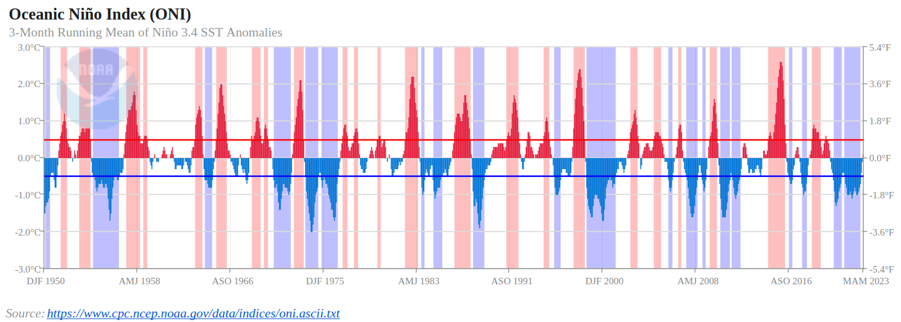

Finding Climate Modes with EOFs
Overview
In this notebook, we will identify and plot a few different modes of climate variability with the help of an EOF package that interfaces with Xarray called xeofs.
Prerequisites
Concepts |
Importance |
Notes |
|---|---|---|
Necessary |
||
Helpful |
Time to learn: 30 minutes
Imports
import numpy as np
import xarray as xr
import matplotlib.pyplot as plt
import xeofs as xe
Accessing and preparing the data
We will use the NOAA Extended Reconstructed Sea Surface Temperature version 5 (ERSSTv5) monthly gridded dataset [Huang et al., 2017], which is accessible using OPeNDAP. More information on using OPeNDAP to access NOAA data can be found here.
data_url = 'https://psl.noaa.gov/thredds/dodsC/Datasets/noaa.ersst.v5/sst.mnmean.nc'
sst = xr.open_dataset(data_url).sst
sst
<xarray.DataArray 'sst' (time: 2056, lat: 89, lon: 180)> Size: 132MB
[32937120 values with dtype=float32]
Coordinates:
* lat (lat) float32 356B 88.0 86.0 84.0 82.0 ... -82.0 -84.0 -86.0 -88.0
* lon (lon) float32 720B 0.0 2.0 4.0 6.0 8.0 ... 352.0 354.0 356.0 358.0
* time (time) datetime64[ns] 16kB 1854-01-01 1854-02-01 ... 2025-04-01
Attributes:
long_name: Monthly Means of Sea Surface Temperature
units: degC
var_desc: Sea Surface Temperature
level_desc: Surface
statistic: Mean
dataset: NOAA Extended Reconstructed SST V5
parent_stat: Individual Values
actual_range: [-1.8 42.32636]
valid_range: [-1.8 45. ]
_ChunkSizes: [ 1 89 180]Check that the data looks as expected:
sst.isel(time=0).plot()
<matplotlib.collections.QuadMesh at 0x7fd2732a41a0>
Before we modify the data, let’s do an EOF analysis on the whole dataset:
s_model = xe.single.EOF(n_modes=4, use_coslat=True)
s_model.fit(sst, dim='time')
s_eofs = s_model.components()
s_pcs = s_model.scores()
s_expvar = s_model.explained_variance_ratio()
s_eofs.plot(col='mode')
<xarray.plot.facetgrid.FacetGrid at 0x7fd2732a6270>

s_pcs.plot(col='mode')
<xarray.plot.facetgrid.FacetGrid at 0x7fd26a5547d0>
s_expvar
<xarray.DataArray 'explained_variance_ratio' (mode: 4)> Size: 32B
array([0.82527888, 0.03644745, 0.02713666, 0.01668907])
Coordinates:
* mode (mode) int64 32B 1 2 3 4
Attributes: (12/15)
model: EOF analysis
software: xeofs
version: 3.0.4
date: 2025-05-22 18:04:33
n_modes: 4
center: True
... ...
sample_name: sample
feature_name: feature
random_state: None
compute: True
solver: auto
solver_kwargs: {}EOF1 explains 83% of the variance, and the map shows interhemispheric asymmetry. The corresponding PC has a period of one year, which we can see more clearly by only plotting a few years:
s_pcs.sel(mode=1, time=slice('1900', '1903')).plot(figsize=(8, 3))
[<matplotlib.lines.Line2D at 0x7fd269366fd0>]
This mode is showing the seasonal cycle. This is interesting, but it obfuscates other modes. If we want to study the other ways Earth’s climate varies, we should remove the seasonal cycle from our data. Here we compute this (calling it the SST anomaly) by subtracting out the average of each month using Xarray’s .groupby() method:
sst_clim = sst.groupby('time.month')
ssta = sst_clim - sst_clim.mean(dim='time')
The remaining 3 EOFs show a combination of the long-term warming trend, the seasonal cycle (EOF analyses do not cleanly separate physical modes), and other internal variability. The warming trend is also interesting (see the CMIP6 Cookbook), but here we want to pull out some modes of internal/natural variability. We can detrend the data by removing the global average SST anomaly.
def global_average(data):
weights = np.cos(np.deg2rad(data.lat))
data_weighted = data.weighted(weights)
return data_weighted.mean(dim=['lat', 'lon'], skipna=True)
ssta_dt = (ssta - global_average(ssta)).squeeze()
Let’s find the global EOFs again but with the deseasonalized, detrended data:
ds_model = xe.single.EOF(n_modes=4, use_coslat=True)
ds_model.fit(ssta_dt, dim='time')
ds_eofs = ds_model.components()
ds_pcs = ds_model.scores()
ds_expvar = ds_model.explained_variance_ratio()
ds_eofs.plot(col='mode')
<xarray.plot.facetgrid.FacetGrid at 0x7fd2693adbd0>
ds_pcs.plot(col='mode')
<xarray.plot.facetgrid.FacetGrid at 0x7fd272757820>
ds_expvar
<xarray.DataArray 'explained_variance_ratio' (mode: 4)> Size: 32B
array([0.12205396, 0.0477458 , 0.03441989, 0.03250342])
Coordinates:
* mode (mode) int64 32B 1 2 3 4
Attributes: (12/15)
model: EOF analysis
software: xeofs
version: 3.0.4
date: 2025-05-22 18:05:01
n_modes: 4
center: True
... ...
sample_name: sample
feature_name: feature
random_state: None
compute: True
solver: auto
solver_kwargs: {}Now we can see some modes of variability! EOF1 looks like ENSO or IPO, and EOF2 is probably picking up a pattern of the recent temperature trend where the Southern Ocean and southeastern Pacific are slightly cooling. EOF3 and EOF4 appear to be showing some decadal modes of variability (PDO and maybe AMO), among other things. There is a lot going on in each of these maps, so to get a clearer index of some modes, we can restrict our domain.
El Niño Southern Oscillation (ENSO)
Here we restrict our domain to the equatorial Pacific. Note that ENSO is commonly defined using an index of SST anomaly over a region of the equatorial Pacific (e.g., the Oceanic Niño Index (ONI)) instead of an EOF. You can read more about ENSO here.
ep_ssta_dt = ssta_dt.where((ssta_dt.lat < 30) & (ssta_dt.lat > -30) & (ssta_dt.lon > 120) & (ssta_dt.lon < 290), drop=True)
ep_model = xe.single.EOF(n_modes=4, use_coslat=True)
ep_model.fit(ep_ssta_dt, dim='time')
ep_eofs = ep_model.components()
ep_pcs = ep_model.scores()
ep_expvar = ep_model.explained_variance_ratio()
ep_eofs.plot(col='mode')
<xarray.plot.facetgrid.FacetGrid at 0x7fd272757a80>
ep_pcs.plot(col='mode')
<xarray.plot.facetgrid.FacetGrid at 0x7fd261411910>
ep_expvar
<xarray.DataArray 'explained_variance_ratio' (mode: 4)> Size: 32B
array([0.32947358, 0.08708966, 0.05319601, 0.04705191])
Coordinates:
* mode (mode) int64 32B 1 2 3 4
Attributes: (12/15)
model: EOF analysis
software: xeofs
version: 3.0.4
date: 2025-05-22 18:05:04
n_modes: 4
center: True
... ...
sample_name: sample
feature_name: feature
random_state: None
compute: True
solver: auto
solver_kwargs: {}fig, ax = plt.subplots(1, 1, figsize=(10, 2), dpi=130)
plt.fill_between(ep_pcs.time, ep_pcs.isel(mode=0).where(ep_pcs.isel(mode=0) > 0), color='r')
plt.fill_between(ep_pcs.time, ep_pcs.isel(mode=0).where(ep_pcs.isel(mode=0) < 0), color='b')
plt.ylabel('PC')
plt.xlabel('Year')
plt.xlim(ep_pcs.time.min(), ep_pcs.time.max())
plt.grid(linestyle=':')
plt.title('ENSO Index (detrended equatorial Pacific SSTA EOF1)')
Text(0.5, 1.0, 'ENSO Index (detrended equatorial Pacific SSTA EOF1)')

Compare to the ONI:
fig, ax = plt.subplots(1, 1, figsize=(10, 2), dpi=130)
plt.fill_between(ep_pcs.time, ep_pcs.isel(mode=0).where(ep_pcs.isel(mode=0) > 0), color='r')
plt.fill_between(ep_pcs.time, ep_pcs.isel(mode=0).where(ep_pcs.isel(mode=0) < 0), color='b')
plt.ylabel('PC')
plt.xlabel('Year')
plt.xlim(ep_pcs.time.sel(time='1950-01').squeeze(), ep_pcs.time.max())
plt.grid(linestyle=':')
plt.title('ENSO Index (detrended equatorial Pacific SSTA EOF1)')
Text(0.5, 1.0, 'ENSO Index (detrended equatorial Pacific SSTA EOF1)')

Pacific Decadal Oscillation (PDO)
Here we restrict our domain to the North Pacific. You can read more about PDO here.
np_ssta_dt = ssta_dt.where((ssta_dt.lat < 70) & (ssta_dt.lat > 20) & (ssta_dt.lon > 120) & (ssta_dt.lon < 260), drop=True)
np_model = xe.single.EOF(n_modes=4, use_coslat=True)
np_model.fit(np_ssta_dt, dim='time')
np_eofs = np_model.components()
np_pcs = np_model.scores()
np_expvar = np_model.explained_variance_ratio()
np_eofs.plot(col='mode')
<xarray.plot.facetgrid.FacetGrid at 0x7fd2693dd150>
np_pcs.plot(col='mode')
<xarray.plot.facetgrid.FacetGrid at 0x7fd2693dd7b0>
np_expvar
<xarray.DataArray 'explained_variance_ratio' (mode: 4)> Size: 32B
array([0.17591581, 0.11029939, 0.07211193, 0.06679409])
Coordinates:
* mode (mode) int64 32B 1 2 3 4
Attributes: (12/15)
model: EOF analysis
software: xeofs
version: 3.0.4
date: 2025-05-22 18:05:05
n_modes: 4
center: True
... ...
sample_name: sample
feature_name: feature
random_state: None
compute: True
solver: auto
solver_kwargs: {}fig, ax = plt.subplots(1, 1, figsize=(10, 2), dpi=130)
plt.fill_between(np_pcs.time, np_pcs.isel(mode=0).where(np_pcs.isel(mode=0) > 0), color='r')
plt.fill_between(np_pcs.time, np_pcs.isel(mode=0).where(np_pcs.isel(mode=0) < 0), color='b')
plt.plot(np_pcs.time, np_pcs.isel(mode=0).rolling(time=48, center=True).mean(), color='k', linewidth=2)
plt.ylabel('PC')
plt.xlabel('Year')
plt.xlim(np_pcs.time.min(), np_pcs.time.max())
plt.grid(linestyle=':')
plt.title('PDO Index (detrended North Pacific SSTA EOF1)')
Text(0.5, 1.0, 'PDO Index (detrended North Pacific SSTA EOF1)')
Summary
In this notebook, we demonstrated a basic workflow for performing an EOF analysis on gridded SST data using the xeofs package. We plotted the PCs associated with ENSO and PDO using deseasonalized, detrended SSTs.
What’s next?
In the future, additional notebooks may use EOFs to recreate published figures, give an overview of other EOF packages, or explore variations of the EOF method.
Resources and references
Scientific description of the ERSSTv5 data set: Huang et al. (2017), doi:10.1175/jcli-d-16-0836.1
Paper describing the xeofs software: Rieger et al., (2024) doi:10.21105/joss.06060